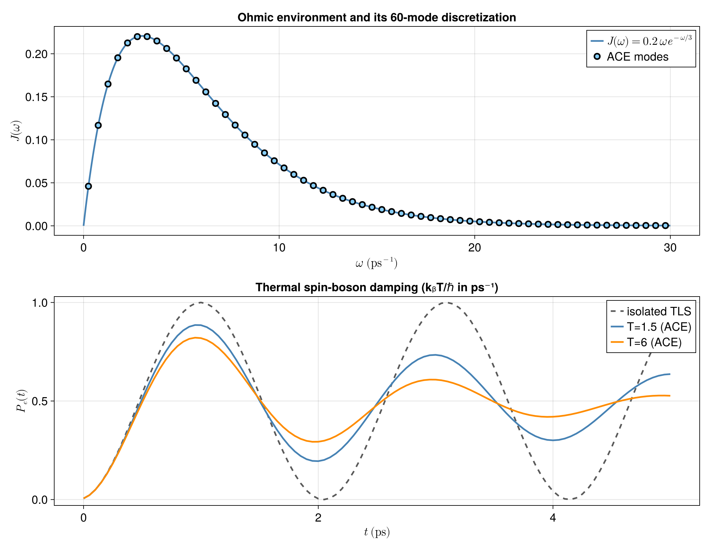

Thermal spin-boson dynamics using ACE
A coherently driven two-level system has perhaps the cleanest clock in quantum dynamics: prepare one level, turn on a resonant transverse drive, and the population undergoes perfectly periodic Rabi oscillations. A thermal environment spoils that clock.
Here we reproduce the spin-boson example used in the ACE toolkit paper. The environment is a continuum of harmonic modes sampled from an Ohmic spectral density. Each mode begins in a thermal state and couples to the excited-state population of the two-level system. ACE builds the influence of these modes one by one and compresses their combined memory into a process-tensor MPO.
The physical question is deliberately simple:
What becomes of coherent Rabi rotations once the two-level system is allowed to leave distinguishable displacements in a thermal bosonic environment?
The full $60$-mode calculation using the parameters of the ACE toolkit paper and the staged figure are generated by scripts/thermal_spinboson_ace.jl.
A driven two-level system
In units with $\hbar=1$, the isolated system Hamiltonian is
\[H_S=\frac{\Omega}{2}\sigma_x=\Omega S_x.\]
Starting from $|g\rangle$, the excited-state population would therefore be
\[P_e(t)=\sin^2\!\left(\frac{\Omega t}{2}\right),\]
and the oscillations would continue indefinitely.
The bath changes this by coupling the excited-state projector $A=|e\rangle\langle e|$ to harmonic modes,
\[H_E = \sum_k \omega_k b_k^\dagger b_k + \sum_k g_k(b_k+b_k^\dagger)A + \Delta H_{\mathrm{PS}}.\]
The final term,
\[\Delta H_{\mathrm{PS}} = \sum_k\frac{g_k^2}{\omega_k}A,\]
is the usual polaron-shift counterterm. It removes the static energy renormalization caused by displacing the oscillators, leaving the comparison with the resonantly driven isolated system clean.
The bath is summarized by the Ohmic spectral density used in the ACE toolkit example,
\[J(\omega) = 0.2\,\omega\, \exp\!\left[-\frac{\omega}{3\,\mathrm{ps}^{-1}}\right].\]
Instead of treating this continuum analytically, ACE asks for its microscopic modes. Dividing $[\omega_{\min},\omega_{\max}]$ into equal bins gives
\[\omega_k = \omega_{\min}+\left(k-\frac12\right)\Delta\omega, \qquad g_k=\sqrt{J(\omega_k)\Delta\omega}.\]
Increasing the number of modes therefore refines the same spectral environment rather than arbitrarily rescaling its interaction strength.
Assemble a modest thermal bath
The publication calculation uses $60$ modes. For the executable documentation build we keep the same model but use a smaller discretization and a short process tensor so ACE construction and $evolve$ stay cheap. The companion script performs the full calculation.
using Logging
using Printf
using ITensors
using ITensors.Ops: Trotter
using ProcessTensors
ohmic_spectral_density(ω) = 0.2 * ω * exp(-ω / 3)
function thermal_boson_density(
physical_site,
liouville_site,
ω,
thermal_frequency,
local_dim,
)
occupations = 0:(local_dim - 1)
weights = exp.(-ω .* occupations ./ thermal_frequency)
weights ./= sum(weights)
number_states = [
MPS([physical_site], [string(n)])
for n in occupations
]
density = to_dm(number_states; coeffs=weights)
return to_liouville(
density;
sites=[liouville_site],
)
end
function one_site_density_matrix(ρ)
tensor = foldl(*, ρ)
site = only(
filter(
index -> plev(index) == 0 && hastags(index, "Site"),
inds(tensor),
),
)
return ComplexF64.(Array(tensor, prime(site), site))
end
const N_bath = 4
const local_dim = 3
const Ω = 3.0
const ω_min = 0.0
const ω_max = 30.0
const thermal_frequency = 1.0 # k_B T / ħ, in ps^-1
const dt = 0.20
const nsteps = 12
const final_time = (nsteps - 1) * dt
const ace_cutoff = 1e-5
const ace_maxdim = 64
Δω = (ω_max - ω_min) / N_bath
frequencies = [
ω_min + (k - 0.5) * Δω
for k in 1:N_bath
]
couplings = sqrt.(
ohmic_spectral_density.(frequencies) .* Δω
)
@assert all(>(0), frequencies)
@assert all(isfinite, couplings)The two-level system starts in |g>. We identify Dn with |g> and Up with |e>, so ProjUp is the spin-boson coupling operator A.
system_sites = siteinds("S=1/2", 1)
system_hamiltonian = OpSum()
system_hamiltonian += Ω, "Sx", 1
system = spin_system(system_sites, system_hamiltonian)
initial_density = to_dm(MPS(system_sites, ["Dn"]));Each oscillator is an independent BosonicMode. Its local Hamiltonian is $ω_k b_k†b_k$ and its initial state is the truncated Gibbs state
\[\rho_k^{\mathrm{th}} = \frac{1}{Z_k} \sum_{n=0}^{M-1} e^{-n\omega_k/(k_BT/\hbar)} |n\rangle\langle n|.\]
The coupling OpSum uses local site 1 for the bath mode and local site 2 for the system. Each mode also carries the polaron-shift counterterm $(g_k^2/ω_k)|e\rangle\langle e|$.
bath_sites = siteinds("Boson", N_bath; dim=local_dim)
bath_liouville_sites = liouv_sites(bath_sites)
modes = [
let
ωk = frequencies[k]
gk = couplings[k]
mode_hamiltonian = OpSum()
mode_hamiltonian += ωk, "N", 1
mode_coupling = OpSum()
mode_coupling += gk, "A", 1, "ProjUp", 2
mode_coupling += gk, "Adag", 1, "ProjUp", 2
mode_coupling += gk^2 / ωk, "ProjUp", 2
initial_mode_density = thermal_boson_density(
bath_sites[k],
bath_liouville_sites[k],
ωk,
thermal_frequency,
local_dim,
)
bosonic_mode(
[bath_liouville_sites[k]],
mode_hamiltonian,
initial_mode_density;
coupling=mode_coupling,
)
end for k in 1:N_bath
];There are no direct oscillator-oscillator interactions. ACE can therefore absorb their influences sequentially. The Dense-construction size warning is expected and is silenced here because this example never builds a joint bath tensor.
bath = with_logger(NullLogger()) do
bosonic_bath(modes)
end;
println("Thermal spin-boson ACE setup")
@printf(" bath modes: %d\n", N_bath)
@printf(" local boson dimension: %d\n", local_dim)
@printf(" drive Ω: %.3f ps^-1\n", Ω)
@printf(" frequency window: [%.1f, %.1f] ps^-1\n", ω_min, ω_max)
@printf(" frequency spacing Δω: %.3f ps^-1\n", Δω)
@printf(" k_B T / ħ: %.3f ps^-1\n", thermal_frequency)
@printf(" timestep dt: %.3f ps\n", dt)
@printf(" final time: %.2f ps\n", final_time)
@printf(" ACE threshold ε: %.1e\n", ace_cutoff)Thermal spin-boson ACE setup
bath modes: 4
local boson dimension: 3
drive Ω: 3.000 ps^-1
frequency window: [0.0, 30.0] ps^-1
frequency spacing Δω: 7.500 ps^-1
k_B T / ħ: 1.000 ps^-1
timestep dt: 0.200 ps
final time: 2.20 ps
ACE threshold ε: 1.0e-05
Compress the thermal environment
A direct bath density matrix for $N$ truncated oscillators lives in a Liouville space of dimension $M^{2N}$. ACE never constructs that joint object. It builds the influence of one oscillator, joins it to the accumulated process tensor, and performs forward/backward SVD sweeps before moving to the next mode.
Singular directions are retained when $σ_i > ε σ_1$.
build_time = @elapsed begin
process_tensor = build_process_tensor(
system;
method=ACE(
cutoff=ace_cutoff,
maxdim=ace_maxdim,
),
environment=bath,
dt=dt,
nsteps=nsteps,
sys_alg=Trotter{2}(),
combine_alg=Trotter{2}(),
progress=false,
)
end
println(process_tensor)
bath_hilbert_dimension = BigInt(local_dim)^N_bath
bath_liouville_dimension = BigInt(local_dim)^(2N_bath)
max_pt_bond = maxlinkdim(process_tensor)
println("ACE compression diagnostics")
println(" formal bath Hilbert dimension: $bath_hilbert_dimension")
println(" formal bath Liouville dimension: $bath_liouville_dimension")
@printf(" maximum PT bond dimension: %d\n", max_pt_bond)
@printf(" process-tensor build time: %.3f s\n", build_time)
max_pt_bond < ace_maxdim || error(
"ACE reached the maxdim safety cap; increase ace_maxdim.",
)trueWatch the Rabi clock lose its rhythm
Once the process tensor is built, the bath no longer appears explicitly. We simply pass the ground-state preparation through the stored multi-time environment and read out $P_e(t)$.
evolution_time = @elapsed begin
trajectory = evolve(process_tensor, initial_density)
end
excited_projector = ComplexF64.(
Array(
op("ProjUp", system_sites[1]),
prime(system_sites[1]),
system_sites[1],
),
)
excited_population = Float64[]
trace_errors = Float64[]
for ρ in trajectory.states_hilbert
ρ_matrix = one_site_density_matrix(ρ)
trace_value = tr(ρ_matrix)
push!(
excited_population,
real(tr(excited_projector * ρ_matrix) / trace_value),
)
push!(trace_errors, abs(trace_value - 1))
end
max_trace_error = maximum(trace_errors)
@assert all(isfinite, excited_population)
@assert all(value -> -2e-3 ≤ value ≤ 1 + 2e-3, excited_population)
@assert max_trace_error < 2e-3
println("Reduced-system diagnostics")
@printf(" P_e(0): %.6f\n", first(excited_population))
@printf(" P_e(t_final): %.6f\n", last(excited_population))
@printf(" maximum trace error: %.3e\n", max_trace_error)
@printf(" trajectory evolution time: %.3f s\n", evolution_time)Reduced-system diagnostics
P_e(0): 0.085585
P_e(t_final): 0.164671
maximum trace error: 4.134e-06
trajectory evolution time: 0.521 s
What the bath does
The companion calculation below restores the published $60$-mode discretization. The upper panel shows the Ohmic spectral density sampled on a uniform frequency grid. The lower panel compares the isolated Rabi clock with ACE trajectories at two bath temperatures on that same oscillator grid.

Without the bath, the drive continually rotates population between $|g>$ and $|e>$. Coupling $|e><e|$ to the oscillator coordinates makes those two system histories leave different states in the environment. The bath thereby acquires which-state information, suppresses the phase coherence that sustains the Rabi rotations, and progressively removes their contrast. The excited-state population consequently approaches $P_e=1/2$: the driven spin is left with approximately equal $|g>$ and $|e>$ populations rather than continuing to execute coherent rotations.
Temperature adds another ingredient: the oscillators are not initially in vacuum, so both thermal fluctuations and the coherent system-driven displacements contribute to the environmental back-action. The two ACE curves use exactly the same frequencies, couplings, and spectral density; only their initial Gibbs temperatures differ. The hotter $k_{\mathrm B}T/\hbar=6$ $\mathrm{ps}^{-1}$ bath erases the oscillation contrast faster than the $k_{\mathrm B}T/\hbar=1.5$ $\mathrm{ps}^{-1}$ bath and drives $P_e(t)$ toward $1/2$ sooner.
Here “thermalising to a 50–50 spin state” refers to the observed loss of Rabi contrast and approach to equal populations in this continuously driven, projector-coupled model. It should not be confused with undriven energy relaxation to a Gibbs population set by a transverse exchange interaction. The process tensor captures this temperature-dependent history before we choose how to probe the two-level system.
The companion benchmark follows the ACE toolkit values $dt=0.05$ ps, $N=60$, local boson dimension $5$, and $ε=10^{-5}$. Convergence can be checked independently by reducing dt, increasing the local boson dimension, refining the frequency discretization, and tightening the ACE threshold.
- A thermal spin-boson bath is specified microscopically by sampling a spectral density into oscillator frequencies and couplings.
- Each
BosonicModecarries its own Hamiltonian, Gibbs state, and system-mode interaction; the modes remain independent before ACE combines their influences. - ACE converts an exponentially large formal bosonic environment into a compressed temporal process tensor using the relative singular-value threshold $σ_i > ε σ_1$.
- The bath destroys the coherence sustaining the Rabi oscillations, so their contrast decays and the driven spin approaches equal ground- and excited-state populations, $P_e=1/2$.
- On the same mode grid and spectral density, the hotter Gibbs bath suppresses coherence faster and reaches the equal-population regime sooner.
- After construction, the same thermal process tensor can be reused for new system preparations, controls, observables, and multi-time probes.